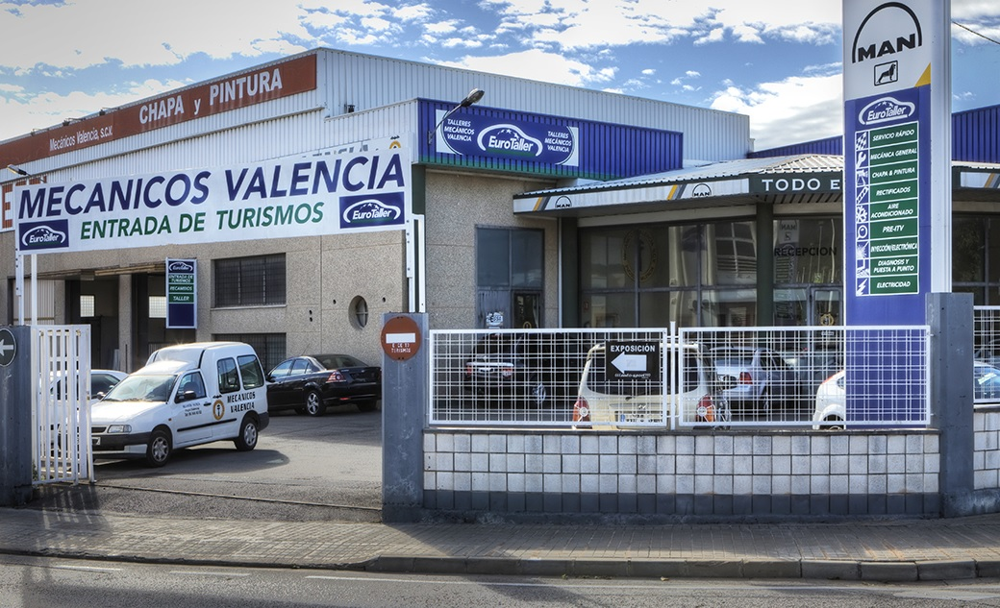
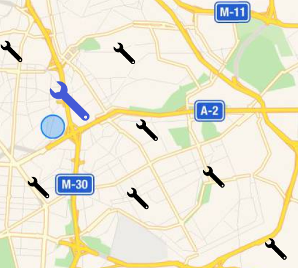

Talleres
Filtros
 Motorpro
El taller "MotorPro Inventado" es una experiencia de aprendizaje dinámica y creativa que combina la ingeniería, la creatividad y la innovación. Está diseñado para fomentar la inventiva y la resolución de problemas en el ámbito de la mecánica y la tecnología. El taller se dirige tanto a entusiastas de la mecánica automotriz como a personas interesadas en explorar nuevas posibilidades en el diseño y la modificación de motores y sistemas de propulsión.